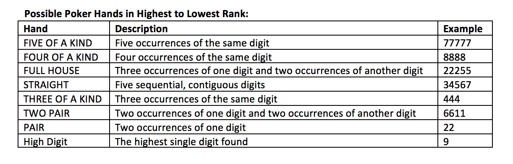

Problem made by Lockheed Martin, is CodeQuest 2017 Problem 15
This problem has a difficulty of 75
How about a friendly game of poker? Don’t worry – no poker experience is required. For our game we aren’t playing the traditional way with a deck of cards. Rather, you will be reading serial numbers from dollar bills from our cyber bank and determining the best possible poker hand based on the digits of that serial number.
Pay close attention to the following rules as they vary slightly from actual poker.
• Zeroes in the serial number are to be ignored and cannot be used in making your hand
• You may use a maximum of 5 digits from the 8 digit serial number
• You may reorder the digits (e.g. in order to form a “straight”)
• Each set of serial numbers may produce multiple possible poker hands, but you are to identify only the best hand based on the hand ranks below

The first line of the file Prob15.in.txt will contain a positive integer T denoting the number of test cases that follow. Each test case will have the following input:
• A single line containing an 8 digit serial number.
11
14912276
99027737
39217860
59977643
58276501
77437751
03999299
12145671
12340076
98764115
11223344
For each test case, your program should output one line containing the serial number and the best hand achieved in the following format. The best hand should be displayed in all caps. In the event that the best hand is a high digit, print the digit.
•
14912276 = TWO PAIR
99027737 = FULL HOUSE
39217860 = 9
59977643 = STRAIGHT
58276501 = PAIR
77437751 = FOUR OF A KIND
03999299 = FIVE OF A KIND
12145671 = THREE OF A KIND
12340076 = 7
98764115 = STRAIGHT